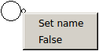
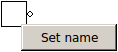

| Icon | Name | Workings |
|
Input pin | Used to input values into your circuit |
|
Output pin | Used to output values out of your circuit |
|  | Contextual menu on circuit input pins | You can change the input or output name and value. The current value is shown, and toggled by clicking it. |
|  | Contextual menu on other items | You can only change the item's name |